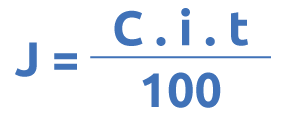
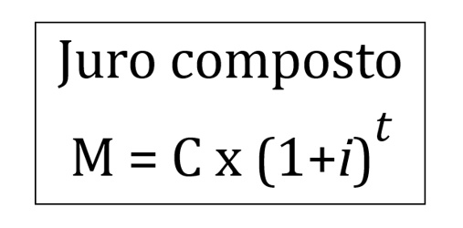

Aqui você encontrará algumas informações sobre juros simples, juros compostos, poupança e moedas estrangeiras!
O juro simples é uma taxa previamente definida e que incide somente sobre o valor inicial.
Por exemplo: Se você emprestar R$1000,00 com uma taxa de 2% ao mês no juro simples, a taxa será sempre 2% de R$1000 ao longo do prazo.
Formúla para calcular juros simples:
Sendo:
A taxa é sempre aplicada ao somatório do capital no final de cada período.
Ou seja, a taxa incide sobre o valor total (ou montante) do período anterior, quando esse montante já teve o valor do juro somado a ele.
Por exemplo, com R$1000 emprestados rendendo a 10% ao mês aconteceria o seguinte:
Fórmula para calcular:
Sendo:
A conta poupança é a caderneta, que é regulada pelo Banco Central. Vale destacar que a rentabilidade da poupança é a mesma em qualquer instituição. Portanto, a escolha do banco não vai influenciar no retorno do investimento. Além disso, os bancos são proibidos de cobrar qualquer taxa ou tarifa dos clientes que possuem apenas a conta poupança. A facilidade para resgatar uma aplicação é um dos principais atrativos da poupança. Ao solicitar um resgate, os recursos caem na conta corrente no mesmo momento, de maneira simples e nada burocrática.
A movimentação permitida é básica: 2 saques, 2 transferências e 2 extratos por mês.
A caderneta tem duas regras de rendimento, ou seja, de quanto o consumidor vai ganhar por deixar o dinheiro guardado.
Isso quer dizer que, se a taxa básica ficar em 8,5%, por exemplo, a remuneração mensal da poupança será de 0,48% ao mês mais a TR.
Taxa de câmbio: é o preço de uma moeda estrangeira medido em unidades ou frações da moeda nacional. São basicamente dois os tipos de operação de câmbio existentes legalmente no Brasil. No mercado flutuante ou turismo são feitas as operações de compra e venda de moeda estrangeira para a cobertura de gastos pessoais em viagens para fora do país. Já no mercado livre ou comercial, são feitas todas as transferências financeiras do Brasil para o exterior - como investimentos e envio de dinheiro para parentes - e atividades comerciais, como importação e exportação.
Ao contrário do que muita gente pensa, não existem limites para compra e venda de moeda estrangeira, nem para o transporte de dinheiro para o exterior. É necessário apenas que a origem do dinheiro trocado seja lícita e que o objetivo da transação seja declarado no contrato de câmbio, assinado no ato da compra de moeda estrangeira.
No Brasil, as operações de câmbio só podem ser feitas por instituições autorizadas pelo Banco Central, que é o órgão que regula esse mercado. Normalmente, são os bancos e corretoras de câmbio.
Escrito por Lucas Daniel
Criado em 16 de março de 2022